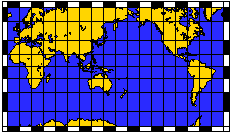
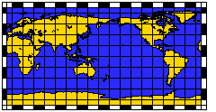
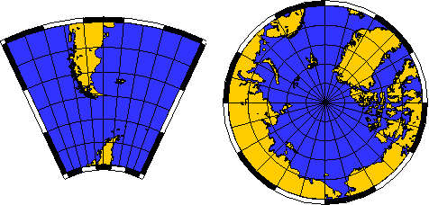
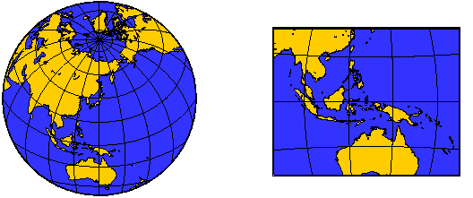
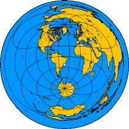
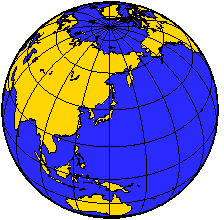

EJEMPLOS
GRÁFICOS DE LAS PROYECCIONES GEOGRÁFICAS MÁS COMUNES
Existen más de 20 proyecciones diferentes
para realizar los mapas. Aquí teneis representados algunos ejemplos
gráficos de las 6 proyecciones más comunes.
-
Proyección
Mercator (Mercator Projection)
-
Proyección
Cilindrica Equidistante (Equidistant Cylindrical Projection)
-
Proyección
Polar Estereográfica (Polar Stereographic Projection )
-
Proyección
Lambert de Azimut y área constante (Lambert Azimuthal Equal-Area
Projection )
-
Proyección
de Azimut Equidistante (Azimuthal Equidistant Projection)
-
Proyección
Ortográfica (Orthograpic Projection)
Las dos primeras proyecciones siempre
presentarán un mapa rectangular del área especificada. Se
exceptúan las áreas comprendidas en las latitudes 85°
norte o sur, que no podrán ser representadas si escogeis la Proyección
Mercator.
Los mapas representados por la Proyección
Polar Estereográfica, serán dibujados con gráficos
curvos. Estos mapas corresponden a un gráfico completamente circular
o curvos con una extensión Este-Oeste de 360°.
Un mapa que use la Proyección
Lambert será una figura rectangular siempre que defina áreas
pequeñas o de tamaño medio. En mapas de grandes áreas
se representa sobre un hemisferio entero con el área especificada
dibujada en el centro del mapa.
La Proyección de Azimut Equidistante
está representada por un dibujo circular del mundo entero que tiene
representado el área de interés en el centro de la gráfica.
Todas las distancias medidas corresponden conla realidad. Todos los sitios
localizados a 180° del centro del mapa corresponden a la circunferencia
exterior de esta figura.
La Proyección Ortográfica
siempre
es una imágen hemiesférica . El área de interés
siempre está representado en el centro de la imagen.
-
-
Proyección
Mercator
-
Esta proyección es probablemente la
más famosa de todas la proyecciones, y toma el nombre de su creador,
que lo creó en 1569. Es una proyección cilindrica que carece
de distorsiones en la zona del Ecuador. Una de las características
de esta proyección es que la representación de una línea
con un azimut (dirección) constante se dibuja completamente recta.
Esta línea se llama línea de rumbo o loxódromo. De
esta forma, para navegar de un sitio a otro, sólo hay que
conectar los puntos de salida y destino con una línea recta, lo
que permite mantener el curso constante durante todo el viaje. Esta Proyección
se usa extensivamente para representar los mapas mundiales, pero las distorsiones
que crea en las regiones polares son bastantes grandes, dando la falsa
impresión de que Groenlandia y la antigua Unión Soviética
son más grandes que África y Sudamérica.

|
-
|
Proyección
Cilindrica Equidistante
Esta proyección cilindrica es realmente
un escalado linear de longitudes y latitudes, Es también conocida
como la Proyección de Plate Carée. Es característico
observar que todas las líneas de los meridianos y paralelos son
líneas rectas, y que todos las áreas representadas corresponden
a perfectos cuadrados. Fijaros que las áreas en la proyección
Mercator cerca de los polos son más grandes.

|
-
-
Proyección
Polar Estereográfica
-
Este tipo de proyección se basa en
las proyecciones que realizaban los griegos. Su uso principal es
representar las regiones polares. Es característico ver que todos
los meridianos son líneas rectas, con un azimut constante, mientras
que los paralelos constituyen los arcos de un círculo.

|
-
-
-
Proyección
Lambert de Azimut y área constante
-
Esta proyección fue creada por Lambert
en 1772, y se usa típicamente para representar grandes regiones
del tamaño de continentes y hemisferios. Carece de perspectiva.
Las áreas representadas coinciden con las reales. La distorsión
es cero en el centro de la proyección para cada plano que se represente,
pero esta distorsión aumenta redialmente conforme se aleja del centro.

|
-
-
|
Proyección
de Azimut Equidistante
Lo más notorio de esta proyección
es las distancias medidas desde el centro del mapa son todas verdaderas.
Por tanto, un círculo que dibuje representa el conjunto de puntos
que están equidistantes del origen de dicho círculo. Además,
las direcciones señaladas desde el centro son también todas
verdaderas. Este tipo de representación ha sido creada desde hace
varios siglos. Es útil para hacerse una idea global de todas las
localizaciones que están equidistantes de un punto determinado.

|
-
-
Proyección
Ortográfica
-
Esta proyección presenta una perspectiva
tomada desde una distancia infinita. Se usa principalmente para presentar
la apariencia que el globo terráqueo tiene desde el espacio. Como
la proyección de Lambert's y la estereográfica, sólo
un hemisferio se puede ver a un tiempo determinado. Esta proyección
no es ni conformal ni posee áreas reales, e introduce muchísima
distorsión cerca de los bordes del hemisferio. Las direcciones desde
el centro de la proyección son, sin embargo, verdaderas. Esta proyección
fue usada por los egipcios y los griegos hace más de 2000 años.

|
-